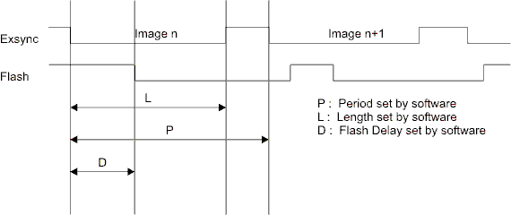
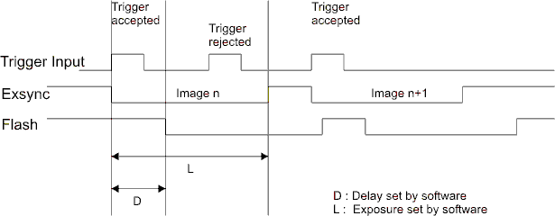
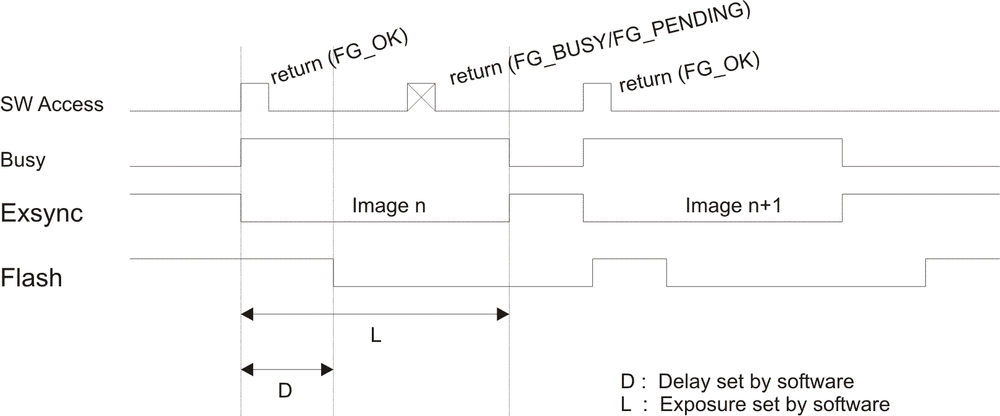

| . |
The Trigger Modes For Area Scan Cameras (AcquisitionApplets)
Contents
Related documents
The microEnable Trigger System
1 Overview
For an optimum adaptation to an industrial environment, the hardware applets of the frame grabbers microEnable IV and microEnable 5 support four trigger modes: Free-Run mode, Grabber-Controlled mode, External Trigger mode and Software Trigger mode. A fifth mode is supported by dual camera applets: Master Sync mode.
2 Area Trigger Modes
1.1 Free-Run
The default mode of the area scan trigger sytem is Free-Run. No signals are sent to the camera.
1.2 Grabber-Controlled
|  |
| Figure 1: Image trigger mode "Grabber-Controlled" |
In this operation mode, the frame grabber controls the image acquisition of the camera by the Exsync signal which is sent to the camera. The signal is generated in accordance with the software settings for period P and exposure L. A related second signal, Flash, is generated with a software-configurable delay D, which is used for controlling a strobe light or other synchronization tasks. There is an additional sub-mode GrabberControlled Synchron which takes care of sychronizing camera port A and camera port B in case of dual applets operation.
1.3 External Trigger
|  |
| Figure 2: Image trigger mode "External Trigger" |
In this operation mode, the image acquisition is controlled by an external signal which is accessible at a trigger input. A rising edge (can be switched to falling edge via software) executes the generation of a camera trigger image trigger. The time of exposure and the polarity of the signal can be configured via software. The setting of the period has no relevance. During the duration of the exposure phase, no new trigger is accepted.
1.4 Software Trigger
|  |
| Figure 3: Image trigger mode "Software Trigger" |
The operation mode of the software trigger is similar to the one of the hardware trigger. The trigger pulses, however, are not executed by an external hardware signal, but by the call of a software function. Analogous to the method of the hardware trigger, the software trigger doesn't generate a new image trigger as long as an initiated exposure phase is active. During these out-times (dead times), a signal BUSY is active. This signal can be queried by software. With the returned value of the executed software it can be definitely stated if an image trigger is executed or not. The software trigger distinguishes between 2 modes:
- Software Trigger
- Software Trigger Queued
In SoftwareTrigger Queued mode it is possible to add several triggers to the internal trigger queue even if there is still another trigger in progress. In case of an active trigger, the returned value is PENDING. Triggers in the queue will be processed as soon as possible.
| Forward |